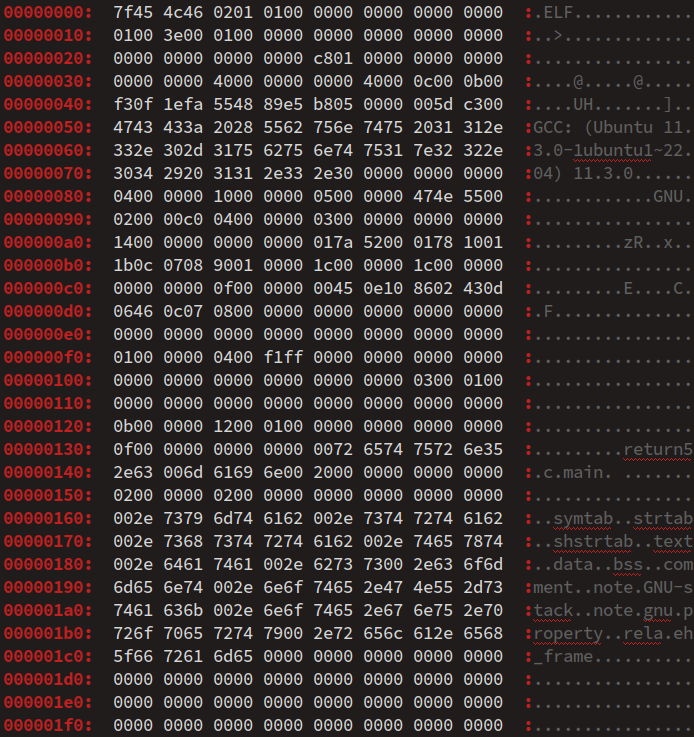

Avec des langages compilés comme C et C++, la compilation est certes la plus emblématique des phases de traitement d'un code source pour le traduire en code exécutable sur machine, mais ce n'est pas la seule. Notamment :
- elle est précédée par la phase de prétraitements, laquelle est mise en œuvre par le préprocesseur, étudié au chap. C4‑III ;
- elle est suivie par les phases d'assemblage puis d'édition de lien, laquelle permet de réunir différents fichiers objets issus de compilations séparées, le plus souvent pour former un fichier exécutable.
Par ailleurs, la phase de compilation elle‑même n'est pas un processus monolithique : elle se décompose en plusieurs étapes – analyse lexicale, analyse syntaxique, analyse sémantique… – chacune faisant appel à un algorithme et un composant logiciel spécifique.
On appelle chaîne de compilation W à la fois la succession de tous ces traitements et l'ensemble des outils logiciels qui les assurent – c'est pourquoi en anglais on emploie l'expression plus générale de tool chain W. Que l'on procède en ligne de commande ou dans un environnement intégré de développement, il est toujours possible de choisir de nombreuses options pour chacune des grandes étapes de la production d'un code exécutable. Ces options peuvent sembler sans importance pour des petits programmes, mais elles deviennent de plus en plus cruciales :
- à mesure que la taille des programmes augmente, et qu'il devient contre‑productif de recompiler l'ensemble du code source à la moindre modification ;
- lorsque les programmes doivent s'exécuter sur différentes plateformes et qu'il faut tenir compte de la spécificité de chacune.
Pour un technicien en informatique qui se forme à la programmation, avoir un minimum de connaissances sur la chaîne de compilation est indispensable. C'est en particulier le cas pour bien comprendre les principes de la programmation modulaire et la production de son code exécutable par une compilation séparée d'objets répartis sur plusieurs fichiers, formant des bibliothèques de composants logiciels réutilisables (aspects qui seront traités dans les chapitres suivants).
Ce sujet complexe est donc abordé dans le présent chapitre seulement dans une perspective de découverte, et non pas de détailler les différentes méthodes d'analyse lexicale ou syntaxique. Dans cet objectif, on présente :
- GCC, en ce qu'elle constituent des exemples représentatifs de chaîne de compilation, et ce d'autant plus qu'elles sont utilisées dans le cadre de ce module de formation ;
- la notion générale de compilateur, la variété de ceux qui existent pour les langages C et C++ et les différents types de compilation qui peuvent être mis en œuvre ;
- les différentes étapes de la compilation, que l'on décompose généralement en trois phases – front‑end, middle‑end et back‑end ;
- l'édition de lien et les notions de bibliothèques statiques et dynamiques.
En complément de ce cours, pour se faire une idée du fonctionnement de la chaîne de compilation et de ce que constitue le code exécutable correspondant à un code source, on pourra visionner les vidéos (en anglais) pointées par les liens ci‑dessous :
- Philip O. Duncan – Frame of Essence – How do computers read code? Y ;
- Ben Eater – Comparing C to machine language Y ;
- EmbeddedArmDevY
Et pour un panorama plus technique, on pourra consulter les liens suivants .
Les chaînes de compilation GCC

Les chaînes de compilation GCC – GNU compiler collection – ont été brièvement présentées au chapitre C1‑II . Dans le cadre des exercices de ce module de formation au langage C, on en a proposé une utilisation rudimentaire typiquement via une commande système de la forme ci‑dessous :
gcc fichier source -o fichier exécutable
et sans entrer dans les détails de son déroulement.
Mais maintenant que les principaux éléments du langage C ont été abordés et que les programmes à coder se complexifient, il est pertinent de faire une présentation détaillée de GCC en mettant en évidence ses différentes étapes dans le cadre d'une utilisation assez simple sur un poste de travail.
Au delà d'une utilisation plus experte de la commande gcc, cette présentation va permettre d'introduire et illustrer de façon pratique les différents concepts de la compilation au sens large.
Synoptique de la commande gcc
Dans un souci de simplicité pédagogique, on ne présente ici la commande gcc que dans le cadre d'une compilation native d'un code source en langage C sur un poste de travail à système Linux. Au delà de quelques différences mineures sur les extensions des fichiers, on obtient un déroulement similaire, aussi bien :
- pour un programme source codé en C++ ;
- ou si l'on travaille sur une machine à système Windows.
Une succession de liens symboliques
Sur un poste de travail à système Linux, la commande commande gcc (de compilation de code source composé en langage C) est structurée en une succession de liens symboliques W qui, selon les paramétrages et les variantes d'invocation saisies par le codeur, aboutit à des fichiers exécutables spécifiques pour :
- une version d'une chaîne de compilation GCC ;
- une architecture de machine cible.
Par défaut – c'est‑à‑dire sans paramétrage ni variante particulière – la commande gcc appelle :
- la version la plus récente parmi celles installée sur le poste de travail ;
- la chaîne de compilation native, c'est‑à‑dire pour une machine cible ayant le même système d'exploitation et même architecture que celle du poste de travail ; ainsi, le code machine éventuellement produit peut y être exécuté.
Sur une machine Linux, la commande which gcc retourne le chemin :
/usr/bin/gcc
qui un lien symbolique. Avec un système récent (par exemple, Linux Mint 21), ce lien pointe vers le fichier gcc-11, placé dans le même répertoire que gcc (il suffit de saisir la commande ls -l/usr/bin/gcc pour le constater).
Et ce fichier est lui‑même un lien symbolique qui pointe typiquement sur le fichier x86_64-linux-gnu-gcc-11, toujours dans le même répertoire.
Cette fois, il s'agit bien d'un exécutable (environ 860 ko) : c'est le programme qui pilote la version 11 de GCC pour une machine cible à système GNU/Linux sur une architecture x86 W de largeur 64 bits.
Si l'on souhaite employer une autre version et/ou produire du code exécutable pour une autre architecture de machine cible, il faut saisir une commande de la forme :
machine-gcc-nº de version
où machine est une chaîne de caractères identifiant une architecture pour laquelle une chaîne de compilation est bien installée sur le poste de travail.
Un programme pilote
Le fichier exécutable d'une chaîne de compilation GCC ciblé par la commande gcc est un programme pilote – en anglais, driver program W.
À partir d'un ensemble de spécifications par défaut codées dans un fichier et des options d'invocations saisies par le codeur, il lance successivement l'exécution des composants logiciels de la chaîne de compilation préalablement sélectionnée.
Comme le détaille la figure ci‑dessous qui décrit un cas générique de compilation native, les différents composants logiciels d'une chaîne de compilation GCC sont les suivants.
-
cc1est un gros exécutable (environ 26 Mo) qui réunit le préprocesseur et le compilateur du langage C. -
asest en fait lien symbolique vers le composant logiciel assembleur requis pour l'architecture sélectionnée. -
collect2est un autre programme pilote qui, via le lien symbolique nomméld, lance l'éditeur de liens requis pour l'architecture sélectionnée.
/usr/lib/gcc/x86_64-linux-gnu/11/ (version 11 de gcc)
.i. cc1 génère un ou plusieurs fichiers intermédiaires, dits de code d'assemblage ou pseudo‑code objet et portant par défaut l'extension .s. Ces fichiers sont constitués d'instructions de bas niveau exprimées dans un langage d'assemblage W. Ils sont compréhensibles par un codeurs expérimentés, quoi que fastidieux à lire, Ils contiennent déjà des instructions spécifiques à l'architecture de la machine cible. x86_64-linux-gnu-as, placé dans le dossier /usr/bin. C'est un petit fichier (moins de 500 ko).as génère un ou plusieurs fichiers intermédiaires, dits de code objet et portant par défaut l'extension .o. Ces fichiers sont constitués d'instructions machines qui ne peuvent être lues que par un processeur compatible avec l'architecture de la machine cible. Ils sont très difficiles à examiner, même pour un codeur inexpérimenté. collect2 (petit fichier de 300 ko) dans le dossier : /usr/lib/gcc/x86_64-linux-gnu/11/ (version 11 de gcc)
Dans le cadre d'une compilation native sur un poste Linux x86 64 bits,
ld pointe sur l'exécutable x86_64-linux-gnu-ld.bfd (1,7 Mo) qui est placé dans le dossier /usr/bin. ld génère le fichier exécutable du programme. On verra qu'il peut procéder selon deux techniques d'édition de liens, l'une dite statique, l'autre dite dynamique. Par défaut, les fichiers intermédiaires générés par la chaîne de compilation sont temporairement stockés dans le dossier /tmp/ (sous Linux) et ils sont automatiquement supprimés à la fin.
Toutefois, la commande gcc offre diverses alternatives d'exécution :
- On peut produire le fichier exécutable en conservant tous les fichiers intermédiaires à l'aide de l'option
-save-temps. En plus des fichiers de code d'assemblage et de code objet, on obtient également les fichiers du code source pré‑traité par le préprocesseur. - On peut aussi interrompre la chaîne de compilation à ses différentes étapes intermédiaires respectivement via les options :
-
-Epour une interruption avant compilation ; -
-spour une interruption avant assemblage ; -
-cpour une interruption avant édition de liens.
-o détermine le nom et le chemin du fichier de sortie interrompue. A contrario, il est possible de faire opérer la commande gcc sans fichiers intermédiaires grâce à l'option -pipe. Les différents composants logiciels de la chaîne communiquent de l'un à l'autre via une mémoire tampon, ce qui améliore la vitesse de traitement mais augmente le coût mémoire du poste de travail.
Par ailleurs, on peut obtenir dans le terminal l'affichage du compte rendu d'exécution de la commande gcc ci‑dessous grâce à l'option -v (ou --verbose).
Pour être analysé en détail, sous Linux, ce flux d'affichage peut être :
- redirigé dans un fichier via un opérateur de redirection comme
>&; - filtré par une commande comme
grepvia un opérateur de redirection comme|&.
Considérons le programme trivial « Hello, world » typiquement codé en langage C dans un fichier nommé hello.c :
#include <stdio.h>
int main(void) {
printf("Hello, World!\n");
return 0;
}
Dans un terminal de commandes en ligne sous Linux, la commande de compilation :
gcc -v hello.c -o hello
affiche en sortie le compte rendu d'exécution ci‑dessous :
Using built-in specs. COLLECT_GCC=gcc COLLECT_LTO_WRAPPER=/usr/lib/gcc/x86_64-linux-gnu/11/lto-wrapper OFFLOAD_TARGET_NAMES=nvptx-none:amdgcn-amdhsa OFFLOAD_TARGET_DEFAULT=1 Target: x86_64-linux-gnu Configured with: ../src/configure -v --with-pkgversion='Ubuntu 11.3.0-1ubuntu1~22.04' --with-bugurl=file:///usr/share/doc/gcc-11/README.Bugs --enable-languages=c,ada,c++,go,brig,d,fortran,objc,obj-c++,m2 --prefix=/usr --with-gcc-major-version-only --program-suffix=-11 --program-prefix=x86_64-linux-gnu- --enable-shared --enable-linker-build-id --libexecdir=/usr/lib --without-included-gettext --enable-threads=posix --libdir=/usr/lib --enable-nls --enable-bootstrap --enable-clocale=gnu --enable-libstdcxx-debug --enable-libstdcxx-time=yes --with-default-libstdcxx-abi=new --enable-gnu-unique-object --disable-vtable-verify --enable-plugin --enable-default-pie --with-system-zlib --enable-libphobos-checking=release --with-target-system-zlib=auto --enable-objc-gc=auto --enable-multiarch --disable-werror --enable-cet --with-arch-32=i686 --with-abi=m64 --with-multilib-list=m32,m64,mx32 --enable-multilib --with-tune=generic --enable-offload-targets=nvptx-none=/build/gcc-11-xKiWfi/gcc-11-11.3.0/debian/tmp-nvptx/usr,amdgcn-amdhsa=/build/gcc-11-xKiWfi/gcc-11-11.3.0/debian/tmp-gcn/usr --without-cuda-driver --enable-checking=release --build=x86_64-linux-gnu --host=x86_64-linux-gnu --target=x86_64-linux-gnu --with-build-config=bootstrap-lto-lean --enable-link-serialization=2 Thread model: posix Supported LTO compression algorithms: zlib zstd gcc version 11.3.0 (Ubuntu 11.3.0-1ubuntu1~22.04) COLLECT_GCC_OPTIONS='-v' '-o' 'hello' '-mtune=generic' '-march=x86-64' /usr/lib/gcc/x86_64-linux-gnu/11/cc1 -quiet -v -imultiarch x86_64-linux-gnu hello.c -quiet -dumpbase hello.c -dumpbase-ext .c -mtune=generic -march=x86-64 -version -fasynchronous-unwind-tables -fstack-protector-strong -Wformat -Wformat-security -fstack-clash-protection -fcf-protection -o /tmp/ccqzwlpo.s GNU C17 (Ubuntu 11.3.0-1ubuntu1~22.04) version 11.3.0 (x86_64-linux-gnu) compiled by GNU C version 11.3.0, GMP version 6.2.1, MPFR version 4.1.0, MPC version 1.2.1, isl version isl-0.24-GMP GGC heuristics: --param ggc-min-expand=100 --param ggc-min-heapsize=131072 ignoring nonexistent directory "/usr/local/include/x86_64-linux-gnu" ignoring nonexistent directory "/usr/lib/gcc/x86_64-linux-gnu/11/include-fixed" ignoring nonexistent directory "/usr/lib/gcc/x86_64-linux-gnu/11/../../../../x86_64-linux-gnu/include" #include "..." search starts here: #include <...> search starts here: /usr/lib/gcc/x86_64-linux-gnu/11/include /usr/local/include /usr/include/x86_64-linux-gnu /usr/include End of search list. GNU C17 (Ubuntu 11.3.0-1ubuntu1~22.04) version 11.3.0 (x86_64-linux-gnu) compiled by GNU C version 11.3.0, GMP version 6.2.1, MPFR version 4.1.0, MPC version 1.2.1, isl version isl-0.24-GMP GGC heuristics: --param ggc-min-expand=100 --param ggc-min-heapsize=131072 Compiler executable checksum: 3f6cb05d963ad324b8f9442822c95179 COLLECT_GCC_OPTIONS='-v' '-o' 'hello' '-mtune=generic' '-march=x86-64' as -v --64 -o /tmp/ccFSPKwJ.o /tmp/ccqzwlpo.s Version de l'assembleur GNU 2.38 (x86_64-linux-gnu) utilisant la version BFD (GNU Binutils for Ubuntu) 2.38 COMPILER_PATH=/usr/lib/gcc/x86_64-linux-gnu/11/:/usr/lib/gcc/x86_64-linux-gnu/11/:/usr/lib/gcc/x86_64-linux-gnu/:/usr/lib/gcc/x86_64-linux-gnu/11/:/usr/lib/gcc/x86_64-linux-gnu/ LIBRARY_PATH=/usr/lib/gcc/x86_64-linux-gnu/11/:/usr/lib/gcc/x86_64-linux-gnu/11/../../../x86_64-linux-gnu/:/usr/lib/gcc/x86_64-linux-gnu/11/../../../../lib/:/lib/x86_64-linux-gnu/:/lib/../lib/:/usr/lib/x86_64-linux-gnu/:/usr/lib/../lib/:/usr/lib/gcc/x86_64-linux-gnu/11/../../../:/lib/:/usr/lib/ COLLECT_GCC_OPTIONS='-v' '-o' 'hello' '-mtune=generic' '-march=x86-64' '-dumpdir' 'hello.' /usr/lib/gcc/x86_64-linux-gnu/11/collect2 -plugin /usr/lib/gcc/x86_64-linux-gnu/11/liblto_plugin.so -plugin-opt=/usr/lib/gcc/x86_64-linux-gnu/11/lto-wrapper -plugin-opt=-fresolution=/tmp/ccSNV518.res -plugin-opt=-pass-through=-lgcc -plugin-opt=-pass-through=-lgcc_s -plugin-opt=-pass-through=-lc -plugin-opt=-pass-through=-lgcc -plugin-opt=-pass-through=-lgcc_s --build-id --eh-frame-hdr -m elf_x86_64 --hash-style=gnu --as-needed -dynamic-linker /lib64/ld-linux-x86-64.so.2 -pie -z now -z relro -o hello /usr/lib/gcc/x86_64-linux-gnu/11/../../../x86_64-linux-gnu/Scrt1.o /usr/lib/gcc/x86_64-linux-gnu/11/../../../x86_64-linux-gnu/crti.o /usr/lib/gcc/x86_64-linux-gnu/11/crtbeginS.o -L/usr/lib/gcc/x86_64-linux-gnu/11 -L/usr/lib/gcc/x86_64-linux-gnu/11/../../../x86_64-linux-gnu -L/usr/lib/gcc/x86_64-linux-gnu/11/../../../../lib -L/lib/x86_64-linux-gnu -L/lib/../lib -L/usr/lib/x86_64-linux-gnu -L/usr/lib/../lib -L/usr/lib/gcc/x86_64-linux-gnu/11/../../.. /tmp/ccFSPKwJ.o -lgcc --push-state --as-needed -lgcc_s --pop-state -lc -lgcc --push-state --as-needed -lgcc_s --pop-state /usr/lib/gcc/x86_64-linux-gnu/11/crtendS.o /usr/lib/gcc/x86_64-linux-gnu/11/../../../x86_64-linux-gnu/crtn.o COLLECT_GCC_OPTIONS='-v' '-o' 'hello' '-mtune=generic' '-march=x86-64' '-dumpdir' 'hello.'
Ce compte‑rendu étant complexe même pour un programme si simple, il ne serait pas pertinent d'en exposer ici tous les détails. Pour faciliter le repérage, les lignes d'invocation des trois composants logiciels – cc1, as et collect2 – ont été artificiellement mises en couleur bleu. On peut y retrouver les chemins des deux fichiers intermédiaires, dont les noms sont générés aléatoirement après le préfixe cc :
-
/tmp/ccqzwlpo.s(code en langage d'assemblage) ; -
/tmp/ccFSPKwJ.o(code objet).
Si l'on effectue la compilation via la commande :
gcc -save-temps hello.c -o hello
puis on liste le contenu du répertoire de compilation via la commande ls, on observe que ce dernier comporte 5 fichiers :
hello hello.c hello.i hello.o hello.s
à savoir le fichier exécutable, le fichier source, et les 3 fichiers intermédiaires .i (code source prétraité), .s (code d'assemblage) et .o (code objet).
- Sous Linux, on trouve dans le répertoire
/usr/binles fichiers de diverses commandes alternatives de la chaîne de compilation GCC, notamment les suivantes. -
cppinvoque le préprocesseur seul. Elle est équivalente àgcc -E(cf. supra). -
ccest par défaut équivalente àgcc. En fait, il s'agit d'un lien symbolique vers/etc/alternative/ccqui, sauf s'il est modifié, est lui‑même un lien symbolique vers/usr/bin/gcc. Contre‑intuitivement,ccn'invoque donc pas le compilateur seul. - Les noms des exécutables
cc1etcollect2, qui pourraient sembler étranges, sont l'héritage des conventions de nommage adoptées dès les premières évolutions de GCC. -
cc1est l'abréviation de C compiler, le numéro «1» se référent au fait qu'il s'agit du premier composant de la toolchain ; -
collect2a été nommé ainsi pour évoquer le fait que ce composant logiciel collecte les fichiers objets pour les lier en un exécutable (ou un fichier de bibliothèque partagée) ; son numéro «2» découle du fait qu'il intervient aprèscc1(même siass'intercale entre les deux). - Pour mettre en évidence que le driver
collect2appelle bien l'éditeur de liensld, il faut saisir la commande de compilationgccavec l'option-Wl,-vqui applique l'option-vspécifiquement à l'éditeur de lien. Dans l'exemple supra, on obtient alors la sortie suivante :
gcc avec l'option -fpreprocessed qui précise que le fichier source est déjà prétraité ou n'a pas besoin de prétraitements, quelle que soit son extension.
collect2 version 11.3.0
/usr/bin/ld -plugin /usr/lib/gcc/x86_64-linux-gnu/11/liblto_plugin.so -plugin-opt=/usr/lib/gcc/x86_64-linux-gnu/11/lto-wrapper -plugin-opt=-fresolution=/tmp/ccXvcYsk.res -plugin-opt=-pass-through=-lgcc -plugin-opt=-pass-through=-lgcc_s -plugin-opt=-pass-through=-lc -plugin-opt=-pass-through=-lgcc -plugin-opt=-pass-through=-lgcc_s --build-id --eh-frame-hdr -m elf_x86_64 --hash-style=gnu --as-needed -dynamic-linker /lib64/ld-linux-x86-64.so.2 -pie -z now -z relro -o hello /usr/lib/gcc/x86_64-linux-gnu/11/../../../x86_64-linux-gnu/Scrt1.o /usr/lib/gcc/x86_64-linux-gnu/11/../../../x86_64-linux-gnu/crti.o /usr/lib/gcc/x86_64-linux-gnu/11/crtbeginS.o -L/usr/lib/gcc/x86_64-linux-gnu/11 -L/usr/lib/gcc/x86_64-linux-gnu/11/../../../x86_64-linux-gnu -L/usr/lib/gcc/x86_64-linux-gnu/11/../../../../lib -L/lib/x86_64-linux-gnu -L/lib/../lib -L/usr/lib/x86_64-linux-gnu -L/usr/lib/../lib -L/usr/lib/gcc/x86_64-linux-gnu/11/../../.. -v /tmp/ccoKFtf6.o -lgcc --push-state --as-needed -lgcc_s --pop-state -lc -lgcc --push-state --as-needed -lgcc_s --pop-state /usr/lib/gcc/x86_64-linux-gnu/11/crtendS.o /usr/lib/gcc/x86_64-linux-gnu/11/../../../x86_64-linux-gnu/crtn.o
GNU ld (GNU Binutils for Ubuntu) 2.38
gcc n'invoque pas lui‑même directement ld mais collect2, il faut entrer dans des considérations historiques et pratiques. Dans les versions antérieures à GCC 2.5.8, toute la chaîne de compilation était intégrée monolithiquement dans le programme cc1. Puis, avec la diversification des langages pris en charge (Fortran, C++, Ada, Go, etc.), il devenait rationnel de faire appel à un éditeur de liens externes, tout particulièrement ld d'Unix (antérieur à GCC et qui peut être utilisé pour d'autres langages compilés que C). Le processus de choix de l'éditeur de lien a donc été implémenté dans un programme séparé nommé collect2. Cas d'une compilation en C++

Dans le cas d'un programme codé en langage C++, la chaîne de compilation GCC opère selon les mêmes principes via la commande g++ qui invoque le compilateur spécifique cc1plus (avec préprocesseur intégré, comme cc1).
Les autres composants logiciels de la chaîne de compilation sont les mêmes que ceux invoqués par la commande gcc : as et collect2 (ld).
Par ailleurs, les extensions des noms de fichiers reconnues ou employées par défaut sont différentes, à savoir :
-
.cpp,.cp,.c++,.cp,.cxx.CPPou même.Cpour les fichiers de code source d'implémentation ; -
.hh,.hp,.hpp,.h++,.HPPou même.Hpour les fichiers de code source d'en‑tête « personnels », c'est‑à‑dire non standards ; -
.iipour les fichiers intermédiaires de code source pré‑traité par le préprocesseur.
Une multitude d'options
La commande gcc dispose d'un très grand nombre d'options, certaines étant générales et d'autres spécifiques à tel ou tel composant (préprocesseur, compilateur, etc.) ou aspect de la chaîne de compilation (avertissements, débogage, optimisation, etc.).
Sur un poste de travail Linux, on peut bien entendu consulter la page du manuel via la commande man gcc puis afficher les détails sur une commande précise en couplant cette commande avec un filtre grep W.
Mais il est sans doute plus efficace de consulter le site de GCC qui propose un récapitulatif thématique des options de la commande gcc sur cette page web . On peut ensuite obtenir les détails de chacune des via les liens fournis pour chaque catégorie d'options.
Par ailleurs, on peut énoncer les considérations générales suivantes sur les options de la commande gcc :
- Une option commençant par le préfixe
-fdétermine un choix binaire – la lettre‑code «f» faisant référence au mot flag, c'est‑à‑dire un drapeau (cf. chap. C3‑III ). En règle générale, il s'agit d'une option qui est indépendant de la machine‑cible. - Une option commençant par le préfixe
-Wpeut appartenir à diverses catégories : - Il peut s'agir d'une option relative à certains avertissements émis par la chaîne de compilation – la lettre‑code «
W» faisant référence au mot waring. - Mais il peut aussi s'agir option spécifique adressée à l'un des 4 composants de la chaîne de compilation, lequel est indiqué par une lettre‑code – à savoir
p(préprocesseur),c(compilateur),a(assembleur),l(éditeur de lien) – immédiatement suivi d'une virgule et du code de l'option. - Dans une option, le mot
nodétermine le choix binaire opposé à celui exprimé par le reste du code de l'option.
-fsigned-char impose que le type char soit systématiquement considéré comme signé (car ce n'est pas le cas par défaut pour toutes les implémentations – cf. chap. C3 II ). -Werror convertit tout avertissement en erreur (avec, le cas échéant, un abandon du processus de compilation) – cf. chap. C1‑II ; -Wa,-v explicite la version de l'assembleur dans le terminal d'exécution de la commande gcc. -no-integrated-cpp inhibe le préprocesseur intégré à cc1 ou cc1plus dans la phase de compilation (ce qui peut être nécessaire lorsque l'on souhaite recourir à un autre préprocesseur, comme GNU M4 W). Les prétraitements avec CPP
Rappelons (cf. chap. C4‑III ) qu'à partir d'un code source réparti sur différents fichiers, le préprocesseur CPP effectue de nombreux prétraitements, à la fois implicites (suppression des commentaires, ajout des marques de lignes…) et explicites (inclusions de fichiers, expansions des macros…) – ces derniers étant codés par des directives.
Intégré dans les exécutables cc1 et cc1plus (avec quelques spécificités), le préprocesseur CPP produit un flux de tokens prétraités à destination du compilateur.
Le préprocesseur CPP peut être invoqué seul via l'option -E de la commande gcc – ou alternativement via la commande cpp – pour effectuer seulement les prétraitements des fichier source .
Si l'option -o n'est pas utilisée, alors la commande cpp (ou gcc -E) génère par défaut pour chaque fichier source d'implémentation (.c) un fichier de sortie avec le même nom que le fichier source, et avec l'extension .i. Cette extension permet à la commande gcc d'identifier tout fichier dont les prétraitements sont déjà effectués.
En principe, l'extension .i donc être impérativement donnée au nom du fichier de sortie en cas d'utilisation de l'option -o dans la perspective d'une compilation ultérieure de ce fichier. Néanmoins, quelle que son extension, il est possible d'indiquer au compilateur qu'un fichier a déjà été prétraité, en utilisant l'option -fpreprocessed.
Divers exemples d'invocation de la commande cpp sont donnés au chap. C4‑III .
Toutefois, dans ce chapitre, on a étudié assez peu d'options de la commande cpp : seulement celles pour opérer le transcodage des caractères du fichier source et du fichier de sortie dans un format spécifié .
En fait, cette commande possède beaucoup d'options, dont on peut trouver la liste détaillée au lien suivant C. S'il n'est pas question ici de les présenter toutes, il est quand même utile d'en mentionner certaines. En particulier, lors de l'invocation de cpp :
- Avec l'option
-Isuivie d'un chemin absolu, on peut spécifier un répertoire dans lequel le préprocesseur est invité à rechercher d'éventuels fichier à inclure via une directive#include. Cela permet notamment de déporter ces fichiers dans un répertoire différent de celui de compilation, sans avoir à modifier les directives d'inclusion dans le code source. - Avec l'option
-includesuivie d'un chemin absolu, on peut inclure un autre fichier source, c'est‑à‑dire d'ajouter « à la volée » une directive#include(chap. C4‑III ). - Avec l'option
-Dsuivie d'une définition de la forme :
expression d'identification=fragment de code
on peut créer une macro‑définition, c'est‑à‑dire d'ajouter « à la volée » une directive#define(chap. C4‑III ).
( – ou ), ou de caractères spéciaux comme " \ etc. – doit être immédiatement précédée du symbole \, formant ainsi une séquence d'échappement pour rendre la commande de compilation compatible avec le langage de script du terminal d'exécution (typiquement, bash). Grâce à ces options, on peut lors de la compilation changer ponctuellement certains prétraitements opérés sur un programme, sans avoir à modifier le fichier source.
Considérons le programme académique constitué du fichier d'implémentation returnA.c ci‑dessous :
#include "defineA.h"
int main(void) {
return A;
}
et du fichier d'en‑tête defineA.h ci‑dessous (placé dans le même dossier) :
#define A 5
Artificiellement, mettons en commentaire – autrement dit, invalidons – la directive d'inclusion (ligne nº 1) dans le fichier source returnA.c comme ci‑dessous :
//#include "defineA.h"
int main(void) {
return A;
}
Tel quel, ce code source ne peut alors pas être compilé puisque l'identificateur A n'est plus défini. Néanmoins, on peut y remédier grâce aux options de CPP mentionnées supra. Par exemple, on peut saisir les commandes suivantes :
-
gcc -include "defineA.h" returnA.c -o returnA
pour inclure « à la volée » le fichier d'en‑têtedefineA.hdont on avait supprimé l'inclusion dans le code source ; -
gcc -D A=5 returnA.c -o returnA
pour définir « à la volée » l'identificateurAmanquant dans le code source en lui donnant la valeur5.
Comme souligné, cet exemple reste évidemment très « artificiel ». Pour comprendre l'utilité de ces options, il faut imaginer une situation réelle où l'on aurait à compiler un programme en opérant des modifications sans éditer le code source.
La compilation avec GCC
Comme déjà souligné, le compilateur est le cœur de la chaîne de compilation. Via de nombreuses étapes, il traduit le flux de tokens prétraités par le préprocesseur en un ou plusieurs fichiers de pseudo‑code objet exprimé en langage d'assemblage – c'est pourquoi on parle également de code d'assemblage.
Ce pseudo‑code objet, déjà spécifique pour l'architecture de la machine cible, est destiné à être ensuite traduit en véritable code objet par l'assembleur.
Lancée avec l'option -S, la commande gcc arrête ses traitements juste après la phase de compilation ; autrement dit, elle n'invoque ni l'assembleur, ni l'éditeur de lien.
- Elle accepte aussi bien des fichiers sources non prétraités (
.cet.h) que des fichiers déjà prétraités d'extension.i(pour lesquels seule la compilation proprement dite est alors effectuée). - Elle attribue par défaut à chaque fichier de sortie de code d'assemblage le même nom que son fichier source d'implémentation correspondant et l'extension
.s. Néanmoins, il est possible spécifier tout autre nom et/ou extension via l'option-o.
L'intérêt de produire le pseudo‑code objet dans un fichier intermédiaire est de pouvoir y apporter des optimisations avant de le fournir à l'assembleur. C'est une pratique courante dans l'industrie logicielle.
Reprenons l'exemple académique précédent en le simplifiant pour le réduire à une forme minimale (sans recours à une pseudo‑constante ni aucun un fichier d'en‑tête) :
int main(void) {
return 5;
}
Enregistré dans un fichier source nommé return5.c, on peut juste le compiler via commande :
gcc -S return5.c
On obtient alors dans le fichier de sortie return5.s le pseudo‑code objet ci‑dessous :
.file "return5.c" .text .globl main .type main, @function main: .LFB0: .cfi_startproc endbr64 pushq %rbp .cfi_def_cfa_offset 16 .cfi_offset 6, -16 movq %rsp, %rbp .cfi_def_cfa_register 6 movl $5, %eax popq %rbp .cfi_def_cfa 7, 8 ret .cfi_endproc .LFE0: .size main, .-main .ident "GCC: (Ubuntu 11.3.0-1ubuntu1~22.04) 11.3.0" .section .note.GNU-stack,"",@progbits .section .note.gnu.property,"a" .align 8 .long 1f - 0f .long 4f - 1f .long 5 0: .string "GNU" 1: .align 8 .long 0xc0000002 .long 3f - 2f 2: .long 0x3 3: .align 8 4:
Bien entendu, un tel programme est incompréhensible pour un non‑initié au langage d'assemblage. Il est compliqué par de nombreuses instructions conventionnelles d'identification et de débogage qu'il n'est pas question de le détailler ici.
Mais pour se faire une idée des optimisations que l'on peut apporter à un pseudo‑code objet, observons par exemple un programme minimal pour effectuer une opération similaire, à savoir retourner la valeur 7 (juste pour changer) :
.text .global _start _start: movq $60, %rax # system call nb 60 = exit (accumulator register) movq $7, %rdi # return code 7 (destination index register) syscall # invoke operating system (using %rax & %rdi as arguments)
Enregistré dans un fichier nommé return7.s, ce programme peut être testé via le script d'assemblage, d'édition de lien et d'exécution suivant :
#!/bin/bash as return7.s -o return7.o ld return7.o -o return7 ./return7 echo $?
Remarques.
- Dans le script ci‑dessus, si l'on souhaite utiliser la commande
gcc -cà la place deas, il faut remplacer la ligne nº 2 par celle ci‑dessous :
gcc -c -nostdlib -nostartfiles -nodefaultlibs return7.s
gcc -S, on peut faire en sorte que le compilateur génère un code d'assemblage sans les instructions de déboguage (notamment celles commençant par .cfi – cf. le programme donné en exemple supra ) grâce à l'option -fno-asynchronous-unwind-tables. On obtient alors le résultat suivant qui ressemble davantage au programme minimal codé directement en langage d'assemblage : .file "return5.c" .text .globl main .type main, @function main: endbr64 pushq %rbp movq %rsp, %rbp movl $5, %eax popq %rbp ret .size main, .-main # rest of the instructions as in the previous version
return7.s car il opère par appel d'une fonction (main) qui retourne une valeur, et non pas par un appel système de sortie (exit). Les options de compilation
C'est bien entendu le compilateur qui fait l'objet de la très grande majorité des options de la commande gcc. Même s'il n'est pas question de les détailler ni même de les énumérer toutes, il est utile d'en connaître quelques unes – au moins celles qui sont décrites ci‑après.
Bien entendu, on a les options essentielles qui ont été présentées dès le chapitre C1‑II :
-
-std=versionqui permet de sélectionner une version de la norme du langage C ou C++ que le code source doit respecter ; -
-Wall-Wextraet-Werrorqui rendent le compilateur plus exigeant en matières d'avertissements .
On peut aussi dores et déjà évoquer certains options pour l'optimisation du code exécutable :
-
-O[number]qui détermine le degré général d'optimisations que le compilateur est autorisé à mettre en œuvre (cf. cette page de référence pour plus de détails ). -
-march=nomet-cpu=nompour indiquer précisément au compilateur l'architecture et le processeur de la machine‑cible (ces options sont complexes, cf. cette page de référence pour plus de détails ).
L'assemblage avec AS
L'assembleur utilisé par défaut par la chaîne de compilation GCC est communément appelé AS ou GAS W (abréviation de GNU Assembler). C'est un programme de petite taille (inférieure à 500 ko) fourni dans le paquet binutils W des distributions GNU/Linux.
À partir d'un fichier de code d'assemblage (de type texte), l'assembleur produit un fichier de code objet (de type binaire) qui, entre autres, traduit chaque instruction du code d'assemblage en instructions machine spécifique pour l'architecture ciblée.
De plus, un fichier objet contient des éléments supplémentaires à celui du fichier d'assemblage dont il est issu : un en‑tête, une ou plusieurs tables des symboles ainsi que des informations de relocalisation et de débogage.
Lancée avec l'option -c, la commande gcc arrête ses traitements juste après la phase de assemblage ; autrement dit, elle n'invoque pas l'éditeur de lien.
- Elle accepte aussi bien des fichiers sources (prétraités ou non) que des fichiers de code d'assemblage d'extension
.s(pour lesquels seul l'assemblage est alors effectué). - Elle attribue par défaut à chaque fichier de sortie de code objet le même nom que son fichier source ou d'assemblage correspondant et l'extension
.o. Néanmoins, il est possible de spécifier tout autre nom et/ou extension via l'option-o.
On peut également procéder avec la commande as mais uniquement si l'on part de fichiers de code d'assemblage.
Par défaut, les fichiers objets générés par l'assembleur AS sont au format ELF W – pour executable and linkable format. Plus précisément, il s'agit de fichiers ELF dits relocalisables, c'est‑à‑dire destinés à former du code exécutable par édition de liens.
Reprenons le cas du programme académique constitué du fichier source return5.c aussi minimal que possible :
int main(void) {
return 5;
}
La commande de compilation gcc -c return5.c produit le fichier objet return.o de 1,2 ko environ, dont on peut vérifier le type à l'aide de la commande file :
$ file return5.o return5.o: ELF 64-bit LSB relocatable, x86-64, version 1 (SYSV), not stripped
Il s'agit donc bien d'un fichier au format ELF relocalisable. Avec un éditeur de code comme Sublime text, il est tout à fait possible de consulter son contenu (cf. ci‑dessous ses 512 premiers octets).
7f45 4c46 0201 0100 0000 0000 0000 0000 0100 3e00 0100 0000 0000 0000 0000 0000 0000 0000 0000 0000 c801 0000 0000 0000 0000 0000 4000 0000 0000 4000 0c00 0b00 f30f 1efa 5548 89e5 b805 0000 005d c300 4743 433a 2028 5562 756e 7475 2031 312e 332e 302d 3175 6275 6e74 7531 7e32 322e 3034 2920 3131 2e33 2e30 0000 0000 0000 0400 0000 1000 0000 0500 0000 474e 5500 0200 00c0 0400 0000 0300 0000 0000 0000 1400 0000 0000 0000 017a 5200 0178 1001 1b0c 0708 9001 0000 1c00 0000 1c00 0000 0000 0000 0f00 0000 0045 0e10 8602 430d 0646 0c07 0800 0000 0000 0000 0000 0000 0000 0000 0000 0000 0000 0000 0000 0000 0100 0000 0400 f1ff 0000 0000 0000 0000 0000 0000 0000 0000 0000 0000 0300 0100 0000 0000 0000 0000 0000 0000 0000 0000 0b00 0000 1200 0100 0000 0000 0000 0000 0f00 0000 0000 0000 0072 6574 7572 6e35 2e63 006d 6169 6e00 2000 0000 0000 0000 0200 0000 0200 0000 0000 0000 0000 0000 002e 7379 6d74 6162 002e 7374 7274 6162 002e 7368 7374 7274 6162 002e 7465 7874 002e 6461 7461 002e 6273 7300 2e63 6f6d 6d65 6e74 002e 6e6f 7465 2e47 4e55 2d73 7461 636b 002e 6e6f 7465 2e67 6e75 2e70 726f 7065 7274 7900 2e72 656c 612e 6568 5f66 7261 6d65 0000 0000 0000 0000 0000 0000 0000 0000 0000 0000 0000 0000 0000 0000 0000 0000 0000 0000 0000 0000 0000 0000 0000 0000 0000 0000 0000 0000 0000
Toutefois, il est très difficile de le comprendre. Sachant quelques bases sur le format ELF et à l'aide d'outil de rétro‑ingénierie, il ressort que :
- les 64 premiers octets, en bleu, constituent l'en‑tête ELF W ;
- les 16 octets suivants, en rouge, constituent la section
.textdu programme – ici réduite à la fonctionmain; - les octets restants sont des données nécessaires pour toute édition de liens ultérieure : table des symboles, table des sections, méta‑informations de relocalisation et de débogage.

Pour visualiser en détail la correspondance entre le code objet de la section .text et les instructions en langage d'assemblage qu'elles traduisent, on peut utiliser l'environnement d'analyse en ligne Compiler Explorer développé par Matt Godbolt. Dans notre exemple, il faut :
- dans la colonne de gauche, sélectionner le langage C et coller le code source du programme ;
- dans la colonne du milieu, sélectionner le compilateur (ici,
x86-64 gcc 11.3) et cocher le paramètre (menu ⚙) :
☑ Compile to binary object
On obtient alors le code d'assemblage de la fonction main avec, au dessus de chaque ligne, les valeurs hexadécimales des octets correspondants dans le code objet – ceux de la ligne en rouge dans le code supra :
5548 89e5 b805 0000 005d c3
comme l'illustre la capture d'écran ci‑contre.
Analyse et désassemblage d'un fichier objet
Un environnement comme Compiler Explorer ne permet pas d'analyser la totalité d'un fichier objet, seulement sa section .text. Toutefois, dans le cadre d'un débogage ou d'une rétro‑ingénierie, il est parfois nécessaire d'obtenir plus d'informations d'un tel fichier, en particulier d'en extraire les tables des symboles.
Or fichier binaire reste très difficile à lire, même pour un codeur expérimenté et avec l'aide d'un éditeur de code hexadécimal, comme par exemple le package HexViewer sous Sublime Text.
Avec cette solution, le fichier objet issu de l'exemple précédent apparaît comme sur la capture d'écran ci‑dessous (512 premiers octets seulement) :
La colonne de droite en caractères gris affiche seulement l'interprétation en code ASCII des octets du fichier. Cela permet de repérer certains éléments (données de type chaîne de caractère, nom des sections…) mais n'apporte pas de visualisation des tables des symboles.
Heureusement, il existe des outils qui permettent de désassembler un fichier objet pour en reconstituer le contenu sous une forme intelligible :
Une brève présentation de ces trois commandes Linux se justifie par leur grande utilité. En effet, elles présentent l'avantage d'être disponibles dès lors que GCC est installée et faciles à mettre en œuvre (dans le cadre d'une utilisation peu experte).
-
nmW – pour name mangling – a déjà été présentée au chap. C4‑II . Elle permet essentiellement d'afficher la table des symboles d'un fichier objet ou exécutable. Pour plus de détails sur ses différentes options, on pourra consulter sa page de manuel . -
objdumpW – pour object dumping – est un outil de désassemblage applicable aux fichiers objets ou exécutables compilés pour toutes sortes d'architectures de machine cible (x86, ARM, MIPS…). Elle possède un très grand nombre d'options dont on peut consulter les détails sur sa page de manuel . -
readelfW est un autre outil de désassemblage, mais applicable seulement aux fichiers objets ou exécutables compilés au format ELF, très bien adaptée pour les fichiers générés par GCC. Elle possède un grand nombre d'options dont on peut consulter les détails sur sa page de manuel .
L'édition de liens avec LD
L'éditeur de liens utilisé par défaut par la chaîne de compilation GCC est communément appelé LD W. C'est un programme de taille moyenne (environ 1,7 Mo) fourni dans le paquet binutils W des distributions GNU/Linux.
À partir de fichiers de code objet compilés spécialement par le codeur ou issus d'une bibliothèque partagée, l'éditeur de liens produit un seul fichier de code exécutable pour la machine cible sélectionnée par la commande de compilation.
Sans option restrictive comme -E, -S ou -c, la commande gcc exécute la chaîne de compilation jusqu'à l'édition de lien :
- Elle accepte aussi bien des fichiers sources (prétraités ou non) que des fichiers de code d'assemblage d'extension
.sou des fichiers de code objet d'extension.o. - Elle donne par défaut au fichier de sortie de code exécutable le nom
a.out. Néanmoins, il est possible et même recommandé de spécifier un autre nom et extension via l'option-o.
On peut également procéder avec la commande ld mais uniquement si l'on part de fichiers de code objet.
Les différents types d'édition de lien
Il existe deux principaux types d'éditions de lien :
- celle dite statique, opérée par la chaîne de compilation ;
- celle dite dynamique, opérée par durant l'exécution du programme (runtime) par un composant logiciel spécifique appelé en anglais dynamic linker W.
En édition de liens statique, le code objet de chacune des fonctions utilisées dans le programme, y compris celles des bibliothèques, est réuni dans le fichier exécutable.
Cela produit un fichier exécutable très volumineux mais qui présente l'avantage d'être autonome, c'est‑à‑dire exécutable sur n'importe quelle machine cible d'architecture compatible, sans avoir à se soucier de l'installation des bibliothèques de fonctions utilisées sur cette machine. C'est un choix parfois opéré pour la production d'applications logicielles.
Avec les commandes gcc ou ld, l'édition de liens statique n'est pas choisie par défaut, il faut employer l'option -static pour la mettre en œuvre.
Faisons l'expérience avec le programme trivial « Hello, world » dont le fichier source hello.c fait appel à la fonction printf issue de la bibliothèque standard.
#include <stdio.h>
int main(void) {
printf("Hello, World!\n");
return 0;
}
Sous Linux, la commande :
gcc hello.c -static -o hello-static
génère le fichier exécutable hello-static de 900 ko ! Et la commande :
$ file hello-static hello-static: ELF 64-bit LSB executable, x86-64, version 1 (GNU/Linux), statically linked, BuildID[sha1]=8e9a3b339abcb3ce39aea1734091f86da6fcc1cf, for GNU/Linux 3.2.0, not stripped
permet de vérifier qu'il s'agit bien d'un fichier lié statiquement. Il peut donc être exécuté sur toute machine à architecture x86‑64, même si la bibliothèque standard du langage C n'y est pas installée.
En procédant au désassemblage de ce fichier exécutable à l'aide de la commande :
objdump -D hello-static > hello-static.dump
et en ouvrant le fichier de redirection hello-static.dump dans un éditeur de code, on peut relever des aspects essentiels. En particulier, en recherchant le symbole <main>, on trouve le code de la fonction principale du programme (section .text) :
0000000000401745 <main>: 401745: f3 0f 1e fa endbr64 401749: 55 push %rbp 40174a: 48 89 e5 mov %rsp,%rbp 40174d: 48 8d 05 b0 68 09 00 lea 0x968b0(%rip),%rax # 498004 <_IO_stdin_used+0x4> 401754: 48 89 c7 mov %rax,%rdi 401757: b8 00 00 00 00 mov $0x0,%eax 40175c: e8 2f 9e 00 00 call 40b590 <_IO_printf> 401761: b8 00 00 00 00 mov $0x0,%eax 401766: 5d pop %rbp 401767: c3 ret 401768: 0f 1f 84 00 00 00 00 nopl 0x0(%rax,%rax,1) 40176f: 00
Dans ce code, on trouve l'appel de la fonction printf (symbole _IO_printf) référencé à l'adresse 40b590. Et en descendant à cette adresse, on trouve le code (partiel) de la fonction _IO_printf :
000000000040b590 <_IO_printf>:
40b590: f3 0f 1e fa endbr64
40b594: 48 81 ec d8 00 00 00 sub $0xd8,%rsp
40b59b: 49 89 fa mov %rdi,%r10
40b59e: 48 89 74 24 28 mov %rsi,0x28(%rsp)
40b5a3: 48 89 54 24 30 mov %rdx,0x30(%rsp)
40b5a8: 48 89 4c 24 38 mov %rcx,0x38(%rsp)
40b5ad: 4c 89 44 24 40 mov %r8,0x40(%rsp)
40b5b2: 4c 89 4c 24 48 mov %r9,0x48(%rsp)
40b5b7: 84 c0 test %al,%al
40b5b9: 74 37 je 40b5f2 <_IO_printf+0x62>
40b5bb: 0f 29 44 24 50 movaps %xmm0,0x50(%rsp)
40b5c0: 0f 29 4c 24 60 movaps %xmm1,0x60(%rsp)
40b5c5: 0f 29 54 24 70 movaps %xmm2,0x70(%rsp)
40b5ca: 0f 29 9c 24 80 00 00 movaps %xmm3,0x80(%rsp)
40b5d1: 00
40b5d2: 0f 29 a4 24 90 00 00 movaps %xmm4,0x90(%rsp)
40b5d9: 00
40b5da: 0f 29 ac 24 a0 00 00 movaps %xmm5,0xa0(%rsp)
40b5e1: 00
40b5e2: 0f 29 b4 24 b0 00 00 movaps %xmm6,0xb0(%rsp)
40b5e9: 00
40b5ea: 0f 29 bc 24 c0 00 00 movaps %xmm7,0xc0(%rsp)
40b5f1: 00
40b5f2: 64 48 8b 04 25 28 00 mov %fs:0x28,%rax
40b5f9: 00 00
40b5fb: 48 89 44 24 18 mov %rax,0x18(%rsp)
40b600: 31 c0 xor %eax,%eax
40b602: 48 8b 3d e7 a0 0b 00 mov 0xba0e7(%rip),%rdi # 4c56f0 <stdout>
40b609: 48 89 e2 mov %rsp,%rdx
40b60c: 31 c9 xor %ecx,%ecx
40b60e: 48 8d 84 24 e0 00 00 lea 0xe0(%rsp),%rax
40b615: 00
40b616: 4c 89 d6 mov %r10,%rsi
40b619: c7 04 24 08 00 00 00 movl $0x8,(%rsp)
40b620: 48 89 44 24 08 mov %rax,0x8(%rsp)
40b625: 48 8d 44 24 20 lea 0x20(%rsp),%rax
40b62a: c7 44 24 04 30 00 00 movl $0x30,0x4(%rsp)
40b631: 00
40b632: 48 89 44 24 10 mov %rax,0x10(%rsp)
40b637: e8 74 30 00 00 call 40e6b0 <__vfprintf_internal>
40b63c: 48 8b 54 24 18 mov 0x18(%rsp),%rdx
40b641: 64 48 2b 14 25 28 00 sub %fs:0x28,%rdx
40b648: 00 00
40b64a: 75 08 jne 40b654 <_IO_printf+0xc4>
40b64c: 48 81 c4 d8 00 00 00 add $0xd8,%rsp
40b653: c3 ret
40b654: e8 27 67 04 00 call 451d80 <__stack_chk_fail>
40b659: 0f 1f 80 00 00 00 00 nopl 0x0(%rax)
qui contient lui‑même d'autres instructions d'appel de sous‑programmes qui implémentent divers aspects de printf.
Remarques.
- L'incorporation en intégralité dans le fichier exécutable du code objet de la fonction
printf, même s'il est volumineux (car c'est une fonction complexe), ne suffit pas à expliquer pourquoi le fichier est si gros en comparaison du fichier source. En effet, l'édition de liens statique d'un programme l'exemple minimal suivant, qui ne fait appel à aucune fonction de bibliothèque : - Le fichier exécutable peut être un peu allégé en le débarrassant de ses symboles de débogage :
- soit lors de la compilation avec la commande
gccen activant l'option-s; - soit après la compilation, en lui appliquant la commande
stripavec l'option-s.
int main(void) {
return 5;
}
En édition de liens dynamique, le code objet des fonctions de bibliothèque n'est pas incorporé dans le fichier exécutable. Pour chaque appel d'une telle fonction, l'éditeur de liens ne fait qu'indiquer une référence externe temporaire qui sera exploitée lors de l'exécution.
Et c'est seulement durant l'exécution du programme qu'un autre composant logiciel, l'éditeur de liens dynamique W (dynamic linker) intervient :
- il résout les références externes en déterminant l'adresse en mémoire vive des fonctions de bibliothèque appelées ;
- et si ce n'est pas encore fait, il charge en mémoire partagée W (shared memory) le code objet des fonctions appelées (qui doivent avoir été compilées préalablement).
Il en résulte un fichier exécutable beaucoup plus petit qu'avec l'édition de liens statique. C'est la raison principale pour laquelle c'est la technique adoptée par défaut avec la commande gcc.
De plus, l'édition de liens dynamique d'autres avantages significatifs :
- l'optimisation de la mémoire vive utilisée sur la machine cible, puisque le code objet des fonctions de bibliothèque en mémoire partagés peut, sans duplication, être utilisé par différents programmes s'exécutant en parallèle ;
- la désynchronisation des mises à jour du programme et des bibliothèques qu'il l'utilise ; ainsi, un programme peut bénéficier de mises à jour des bibliothèques sans nécessiter lui‑même de recompilation.
Reprenons le même programme trivial « Hello, world » que supra et compilons le normalement avec gcc, sans option particulière :
gcc hello.c -o hello
génère le fichier exécutable hello de seulement 16 ko environ. Et la commande :
$ file hello hello: ELF 64-bit LSB pie executable, x86-64, version 1 (SYSV), dynamically linked, interpreter /lib64/ld-linux-x86-64.so.2, BuildID[sha1]=7a679a407ced3b9a8a9ffa9eb6679be44d44094a, for GNU/Linux 3.2.0, not stripped
permet de vérifier qu'il s'agit bien d'un fichier lié dynamiquement. Elle précise également que l'éditeur de liens dynamique à utiliser (ou interpréteur) est ld-linux-x86-64.so.2. On verra infra qu'il s'agit d'un fichier de bibliothèque partagée (shared object).
Pour en savoir plus, on peut procéder à l'analyse de ce fichier ELF comme ci‑dessous :
$ readelf -d hello | grep NEEDED 0x0000000000000001 (NEEDED) Bibliothèque partagée : [libc.so.6]
ce qui permet d'exhiber la dépendance avec le fichier de bibliothèque partagée libc.so.6.
En procédant au désassemblage du fichier exécutable à l'aide de la commande :
objdump -D hello > hello.dump
et en ouvrant le fichier de redirection hello.dump dans un éditeur de code, on constante que la fonction main a presque le même code que dans la version liée statiquement :
0000000000001149 <main>: 1149: f3 0f 1e fa endbr64 114d: 55 push %rbp 114e: 48 89 e5 mov %rsp,%rbp 1151: 48 8d 05 ac 0e 00 00 lea 0xeac(%rip),%rax # 2004 <_IO_stdin_used+0x4> 1158: 48 89 c7 mov %rax,%rdi 115b: e8 f0 fe ff ff call 1050 <puts@plt> 1160: b8 00 00 00 00 mov $0x0,%eax 1165: 5d pop %rbp 1166: c3 ret
La différence majeure se trouve dans l'appel de la fonction puts (put string) qui :
- vient en substitution de la fonction
printf(l'éditeur de liens a optimisé le code objet car, en l'absence de spécifications de conversion dans la chaîne de format, l'emploi deputsrevient au même) ; - se présente via le symbole
<puts@plt>qui indique que la référence est à chercher dans la procedure linkage table (PLT).
Et en remontant à l'adresse 1050, on trouve non pas le code de la fonction puts une instruction de saut sur l'adresse relative de son code dans la bibliothèque standard du langage C.
0000000000001050 <puts@plt>: 1050: f3 0f 1e fa endbr64 1054: f2 ff 25 75 2f 00 00 bnd jmp *0x2f75(%rip) # 3fd0 <puts@GLIBC_2.2.5> 105b: 0f 1f 44 00 00 nopl 0x0(%rax,%rax,1)
Les différents types de fichiers ELF sous Linux
Sous Linux, un fichier objet au format ELF peut être de type :
- relocalisable (relocatable) – c'est le cas s'il est directement issu de la phase assemblage ;
- exécutable, lorsqu'il est produit par édition de liens statique ou dynamique, sans option particulière (cf. supra ) ;
- bibliothèque partagée (shared object), lorsqu'il est produit par édition de liens dynamique avec l'option
-shared.
Les options de l'édition de liens
Pour approfondir les connaissances sur l'édition de liens, on pourra se reporter à la série de vidéos proposées par la chaîne Embeddedarmdev Y.
La compilation

Notions générales de compilateur et d'implémentation
En informatique, un compilateur W (en anglais, compiler) est un logiciel qui, à partir d'un code source, exprimé dans un langage de haut niveau, dit langage source, produit un code objet dans un langage de bas niveau, dit langage cible, spécifique pour une machine donnée dite machine cible .
En langages C et C++ :
- le code dit « source » n'est pas exactement celui saisi par le ou les programmeurs, il a déjà subi les traitements opérés par le préprocesseur ; en particulier, les fichiers sources primaires (typiquement, les fichiers d'en‑tête de module de bibliothèque – d'extension
.hen C) ont été incorporés dans les fichiers sources principaux (typiquement.cou.cpp), via des directives#include; - le code dit « objet » est composé en langage binaire, dit « machine » (et non pas en langage d'assemblage) ; toutefois, il ne constitue pas encore un code exécutable : il reste à assembler tous les objets compilés, étape qu'on appelle l'édition de lien, pour former le fichier exécutable.
On emploie souvent – y compris dans ce chapitre – le terme de « compilateur » pour désigner la chaîne de compilation dans son ensemble, c'est-à-dire en incluant l'éditeur de liens. Cela vient du fait que le compilateur est considéré comme le composant principal de cet ensemble logiciel.
Notion d'implémentation
Cette notion a déjà été abordée au chapitre C2‑II .
On appelle implémentation d'un programme l'association d'une chaîne de compilation (avec une version précise de chacun de ses composants logiciels) et d'une machine‑cible pour laquelle est engendré le code exécutable de ce programme.
En matière de compilation, c'est essentiellement le microprocesseur ou le microcontrôleur – avec son jeu d'instructions – qui fait la spécificité d'une machine cible.
À la variété des compilateurs s'ajoute celle, potentiellement assez vaste, des machines cibles qui peuvent exécuter un programme donné, avec toutes les combinaisons imaginables. Il en faut avoir conscience pour comprendre qu'il est difficile d'énoncer des « vérités absolues » en matière de production de code exécutable.
Les différents types de compilation
Avant d'étudier les différentes étapes de la compilation, il faut avoir conscience que ce qui pourrait sembler un simple aspect technique de la programmation constitue en réalité, à lui tout seul, un vaste domaine dont l'histoire, bien que relativement récente en comparaison avec d'autres domaines techniques, est extrêmement riche. Le foisonnement des langages de programmation et des recherches et développements menés pour dominer la complexité grandissante des logiciels à produire en est le reflet. En termes de puissance et de complexité, un abîme sépare les premiers ordinateurs de la fin des années 1950 et les machines que nous utilisons quotidiennement (téléphones portables, etc.)
Il n'est donc pas possible de détailler ici toutes les techniques de la compilation, ni évoquer des développements essentiels comme les compilateurs de compilateurs. On se contentera de simplement de relever quelques aspects transversaux.
Compilation native versus croisée
Une compilation d'un programme ne peut être effectuée que sur une machine capable d'exécuter un compilateur du langage employé. Typiquement, on emploie un ordinateur.
- Lorsque cet ordinateur est identique à la machine cible, on parle de compilation native (en anglais, native compilation).
- A contrario, si l'ordinateur sur laquelle s'effectue la compilation présente des différences significatives avec la machine cible, on parle de compilation croisée W (en anglais, cross compilation) .
Les situations de compilation croisée ne sont pas aussi rares que pourrait le penser un débutant en programmation :
- c'est toujours le cas lorsqu'on programme une carte à microcontrôleur ; typiquement, on utilise un ordinateur comme terminale de programmation, équipé du logiciel Arduino IDE, qui lui-même intègre les compilateurs AVR‑GCC et AVR‑G++ (cf. supra ) ;
- c'est aussi le cas lorsqu'on développe une application pour smartphone ; en effet, même s'il possède une architecture matérielle puissance et un système d'exploitation multi-tâches, un smartphone ne dispose pas d'une interface utilisateur appropriée pour coder (l'écran est trop petit, d'autant plus qu'il est partagé avec le clavier…).
Pour la programmation des cartes à microcontrôleurs, une chaîne de compilation GCC est commode car elle prend en charge plusieurs langages et une grande variété de compilateurs, pour toutes sortes de machines et systèmes d'exploitation.
Compilation simple passe versus multi‑passes
Historiquement, la compilation d'un programme était une tâche lourde pour les ordinateurs, dont les ressources en calculs et en mémoire étaient très limitées. On a donc créé des langages comme Pascal W, qui est contraignant dans sa forme (tous les types et toutes les variables globales doivent être déclarées au début du programme) pour simplifier la compilation, et en particulier d'effectuer de nombreuses tâches d'analyse en intégralité avec une une seule passe, c'est-à-dire une seule lecture du fichier source.
Mais avec les progrès vertigineux accomplis en micro-électronique (la fameuse loi de Moore W), on a commencé à s'affranchir de ces contraintes. Ainsi un langage comme C permet de déclarer une variable n'importe où dans le code source et de répartir ce dernier sur plusieurs fichiers. En contrepartie, la compilation nécessite plusieurs passes pour pouvoir déterminer toutes les adresses des données et fonctions, restées inconnues lors de la première passe.
Étapes de la compilation
La compilation est un processus très complexe qui nécessite une succession de traitements, chacun faisant appel à un algorithme spécifique.
Dans les compilateurs récents des langages généralistes comme C et C++, on distingue trois grandes parties, respectivement dites frontale (front‑end), centrale (middle‑end) et arrière (back‑end).
Partie frontale (front‑end)
La partie frontale (dite encore souche) de la compilation est, en principe, indépendante de la machine cible. Elle consiste en une analyse lexicale, syntaxique et sémantique du langage pour aboutir à la production d'un code intermédiaire.
-
L'analyse lexicale W, en anglais lexing, supprime les commentaires et les séparateurs blancs surnuméraires (si cela n'a pas déjà été fait par le préprocesseur), puis décompose le code en une séquence de jetons (en anglais, token, d'où l'expression « tokénisation » du code), chaque jeton étant identifié par une catégorie précise (identificateur, mot-clé, séparateur, etc.). Tous les identificateurs sont listés dans un tableau appelé table des symboles W.
L'analyse lexicale permet déjà de détecter certaines erreurs de codage : identificateurs mal formés, symbole non autorisé, etc.
-
L'analyse syntaxique W, en anglais parsing, transforme la séquence de jetons issue de l'analyse lexicale en un arbre syntaxique. Ce dernier représente les aspects structurels du code par des nœuds hiérachisés et des liaisons entre nœuds : par exemple, pour une bifurcation
if, on a un nœud racine en liaison directe avec trois nœuds : 1) l'expression de la condition, 2) le bloc d'instructions ddans l'affirmative (si la condition est évaluée vraie, 3) le bloc d'instructions dans la négative (si la construction est évaluée fausse) W.L'analyse syntaxique permet de détecter des erreurs comme l'absence d'une expression attendue (par exemple, à cause d'un oubli des parenthèses), la malformation d'un bloc, etc.
-
L'analyse sémantique W, en anglais , complète l'arbre issu de l'analyse syntaxique et la table des symboles générés lors de l'analyse lexicale. En particulier :
- elle fait correspondre à chaque identificateur sa déclaration ou une définition via une étiquette (en anglais, label), c'est-à-dire un symbole élémentaire qui deviendra par la suite une adresse ;
- avec un langage à typage statique comme C ou C++, elle vérifie la bonne concordance des types des opérations d'affectation et procède à l'initialisation des variables ;
L'analyse syntaxique permet notamment de détecter les absences et les conflits de déclarations, les erreurs de typage.
- En l'absence d'erreurs détectées précédemment, la génération de code intermédiaire composé dans un langage intermédiaire W – de bas niveau mais indépendant de la machine cible – produit, pour chaque unité de compilation, un fichier destiné à la partie centrale de la compilation.
Composition du code intermédiaire
La composition du code intermédiaire généré par la compilation frontale diffère déjà considérablement du code source. En particulier :
- les déclarations des types ne sont plus présentes, mais elles ont été prises en compte dans la déclarations des variables pour calculer l'espace mémoire nécessaire à chacune ;
- les déclarations des variables globales ont été traitées par des allocations mémoire ; celles des variables locales par des instructions d'allocation mémoire ; de la sorte, l'accession à la valeur d'une variable pour des opérations de lecture et d'écriture s'effectue soit par son adresse, soit encore par une étiquette s'il s'agit d'une variable externe à l'unité de compilation ;
- de même, les fonctions sont des parties de code identifiées par l'adresse de leur première instruction ou une étiquette s'il s'agit d'une fonction externe à l'unité de compilation (par exemple, définie dans une bibliothèque) ;
- les instructions structurées (boucles, etc.) sont décomposées en instructions élémentaires de tests et de sauts à des adresses ou des étiquettes.
Partie centrale (middle‑end)
La partie centrale de la compilation est d'abord consacrée à d'autres tâches d'analyse et de vérification :
- analyse des contraintes d'antériorité entre les instructions pour pouvoir éventuellement les exécuter de façon parallèle (sur un processeur multi-cœurs) W ;
- analyse des alias associés aux allocations mémoire (liste des pointeurs ciblant une même adresse) W, etc.
Mais en plus, la partie centrale procède à l'optimisation du code intermédiaire sans pour autant faire intervenir les spécificités de la machine cible. Notamment :
- elle calcule les expressions constantes et propage leur valeur dans le code ; ainsi, toute occurrence de constante déclarée est remplacée par sa valeur, comme le fait le préprocesseur avec les pseudo-constantes ;
- elle identifie et élimine les branches mortes du code, c'est-à-dire les instructions qui ne seront jamais exécutées, par exemple parce qu'elles sont conditionnées par une expression toujours fausse ;
- elle délocalise hors des boucles des instructions invariantes qui n'ont pas besoin d'être répétées (par exemple, la déclaration d'une variable locale, mais pas son affectation) ;
La partie centrale fournit à la partie arrière, pour chaque unité de compilation, un fichier de code intermédiaire optimisé qui, en principe, ne dépend ni du langage source, ni de la machine cible.
Partie arrière (back‑end)
Enfin, la partie arrière de la compilation est celle qui traduit le code intermédiaire optimisé en un code objet composé avec le jeu d'instruction de la machine cible. Elle procède également à un certain nombre d'optimisations spécifiques à son architecture. En particulier :
- elle attribut respectivement aux variables statiques les plus sollicitées dans le programme (et en langages C/C++, celles déclarées de la classe
register) des registres du microprocesseur, et ce dans la limite des registres disponibles ; les autres variables statiques n'obtiennent qu'un espace mémoire dans le segment.data; - elle réorganise certaines séquences d'instruction pour améliorer les performances de vitesse : par exemple, plutôt que de multiplier ou diviser une valeur entière par 2n, elle décale son mot mémoire de n rangs, respectivement vers la gauche ou la droite (ce qui est plus rapide que le traitement d'une opérateur binaire, puisque le processeur ne travaille que sur un seul registre) ; en anglais, on parle de peephole optimization W.
L'assemblage – le langage machine
L'édition de liens
Notion d'éditeur de lien
Schématiquement, un éditeur de liens (en anglais, linker) est un logiciel qui assemble les différents fichiers objets issus :
- de la compilation des fichiers sources d'un programme (les unités de compilation),
- de bibliothèques déjà compilées,
pour former :
- soit un fichier exécutable sur la machine cible,
- soit un nouveau fichier objet de bibliothèque,
C'est une tâche beaucoup moins complexe que la compilation. C'est pourquoi un éditeur de lien est rarement un logiciel isolé : il est le plus souvent associé à un compilateur et, s'il est indépendant du ou des langages sources dont sont issus les fichiers objets, il procède en fonction de la machine cible (même s'il y a moins de spécificités que pour la compilation). Bien évidemment, la collection GCC inclut un éditeur de lien, désigné ld. Très polyvalent, il admet de nombreuses options et s'adapte à la plupart des plate-formes.
Déroulement de l'édition de lien
Chaque fichier objet est notamment constitué :
- d'un segment
.dataqui stocke des valeurs à des adresses mémoires ordonnées ; - d'un segment
.textqui stocke des instructions à des adresses mémoires ordonnées ; - d'une table des symboles qui met en relation les étiquettes et des adresses mémoires ;
- des informations de relocalisation des données dans les instructions, avec le recensement des dépendances lorsqu'un symbole qui y figure est externe ;
- d'un en‑tête dont la premier champ est le nom du fichier et qui récapitule la longueur du segment
.dataet du segment.text.
Dans le futur fichier exécutable, l'édition de lien consiste à :
- concaténer les segments
.datade tous les fichiers objet et inscrire la somme des longueurs de ces segments dans l'en‑tête du fichier exécutable ; - concaténer les segments
.textde tous les fichiers objet et inscrire la somme des longueurs de ces segments dans l'en‑tête du fichier exécutable ;
et ce faisant, d'effectuer un nouvel adressage absolu des données et des instructions tout en complétant les adresses manquantes dans les instructions (sauts, etc.) pour satisfaire aux dépendances dans les informations de relocalisation.